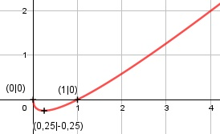

Aufgabe 134 f(x) = x - = x - x0,5 f'(x) = 1 - 0,5 * x-0,5 f''(x) = -0,5x * (- 0,5) * x-1,5 = 0,25 * x-1,5 f'''(x) = (-1,5) * 0,25 * x-2,5 = -0,3125 * x-2,5 x muss ≥ 0 sein wegen Quadratwurzel Definitionsbereich: 0 ≤ x < ∞ f(x) wird dann am kleinsten, wenn x = 0,25 (Extrempunkt) Wertebereich: -0,25 ≤ f(x) < ∞ Symmetrie: f(-x) = -x - ≠ f(x) --> keine Achsensymmetrie -f(-x) = -(-x - ) -f(-x) = x + ≠ f(x) --> keine Punktsymmetrie Nullstellen: f(x) = 0 x - = 0 |+ x = |2 x2 = x |-x x2 - x = 0 x * (x - 1) = 0 x1 = 0 x - 1 = 0 | +1 x2 = 1 N1(-1|0), N2(0|0) Schnittpunkt mit der y-Achse: x = 0 f(0) = 0 - = 0 Sy(0|0) Extrempunkte: f'(x) = 0 1 - 0,5 * x-0,5 = 0 |+0,5 * x0,5 1 = 0,5 * x-0,5 |2 0,25 1 = 0,25 * x-1 = ------ |*x x x = 0,25 f(0,25) = 0,25 - = 0,25 - 0,5 = -0,25 f''(0,25) = 0,25 * (0,25)-1,5 < 0 --> Tiefpunkt (0,25|-0,25) Wendepunkte: f''(x) = 0 0,25 * x-1,5 = 0 |:x-1,5 0,25 = 0 --> Widerspruch --> keine Wendepunkte Graph:
